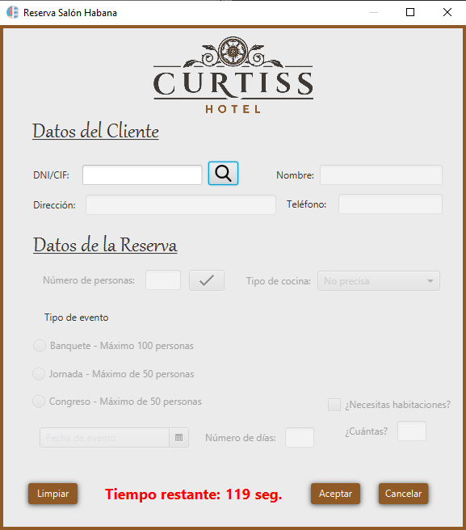
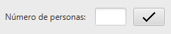
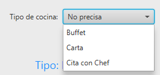
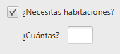
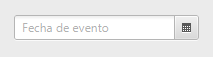
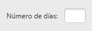
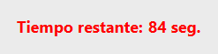
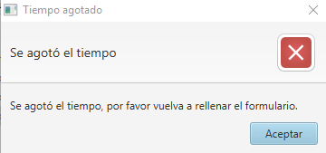

Esta ventana de ayuda le indicará paso a paso como funciona la ventana de Reserva de Salón Habana y como introducir paso a paso una reserva.
Esta ventana se divide en dos secciones, la primera, Datos del cliente que podrá encontrar su ayuda detallada en Ayuda de Reservas, y Datos de la reserva, de la que se hablará en esta sección.

Una vez realizada la búsqueda de clientes, detallada en la sección Ayuda de Reservas, se habilitarán los campos para reserva del Salón Habana. Está sección consta de los siguientes campos:
Este campo está formado por dos componentes, un TextField, o campo de texto, en el que se introducirá el número de personas, y un componente de tipo Button, o botón, para validar el número de personas.
Tal y como se indica más adelante en el Tipo de evento, cada evento tiene un máximo de personas. El botón que valida el número de personas se encarga de activar las opciones según el número de personas introducidas. Esta comprobación se puede iniciar pulsando el botón Intro del teclado mientras se está en el campo de texto o pulsando en el botón para validar.

El tipo de evento deberá seleccionarse mediante RadioButtons, o selector de botón, los cuáles solo le permiten seleccionar una de entre todas las opciones disponibles.
Las opciones disponibles por defecto son: Banquete, Jornada y Congreso.
Al seleccionar una opción, se activarán los diferentes componentes. Al seleccionar Banquete, se activará el tipo de cocina. Al seleccionar Jornada, no se activa ninguna componente adicional. Al seleccionar Congreso, se activarán la opción para introducir el número de días y la opción de introducir si el usuario desea habitaciones.
El tipo de cocina podrá seleccionarse mediante un componente de tipo ComboBox, o desplegable, que incluye tipos String, o cadena de caracteres, para referirse al tipo de cocina.
El usuario podrá elegir entre: No precisa, Buffet, Carta o Cita con Chef. El valor por defecto está establecido en No precisa.

Este apartado se compone de 2 componentes, un Checkbox y un TextField. Al pulsar en el Checkbox, el TextField se activará, permitiendo al usuario introducir el número de habitaciones.
El usuario podrá elegir entre: No precisa, Buffet, Carta o Cita con Chef. El valor por defecto está establecido en No precisa.
Este componente dispone de control de errores. Si el usuario introduce un carácter no númerico, en la alerta, detallada en Ayuda de Reservas, aparecerá un mensaje avisando al usuario de que introduzca un número valido.

La Fecha de reserva del salón podrá ser introducida mediante un componentes de tipo DatePicker, o selector de fecha. Para introducir la fecha solo hay que hacer click en el icono del calendario en el selector.
La Fecha de reserva tendrá como valor inicial el día actual. Se podrá seleccionar cualquier día igual o posterior a la fecha actual. No se podrá seleccionar una día anterior al día actual. Los días deshabilitados aparecerán con un fondo de color rojo.

El n&úacute;mero de días podrá ser introducido mediante un componentes de tipo TextField, o campo de texto. Este componente se habilitará al seleccionar Congreso.
Este componente dispone de control de errores. Si el usuario introduce un carácter no númerico, en la alerta, detallada en Ayuda de Reservas, aparecerá un mensaje avisando al usuario de que introduzca un número valido.

La ventana de reserva del Salón Habana disponde de un temporizador, con tiempo preestablecido en 120 segundos. Una vez finalizado el tiempo, se avisará al usuario de que se agotó el tiempo y los campos se vaciarán y se deberá introducir todos los datos de nuevo.

